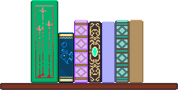
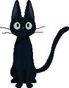

Kazak the Hound of Space is a dog who appears in Kurt Vonnegut's The Sirens of Titan and Breakfast of Champions, probably as a different dog each time. There is also Kazakh the dog who appears in Galápagos and is also apparently a different dog, though I kind of thought of them all as the same dog in different universes.
Vlad the Impaler is a pet cockatiel from The Broom of the System who begins talking and causing chaos.
Franny and Zooey by J. D. Salinger
A zoomed-in family drama that makes me cry.
A Tree Grows in Brooklyn by Betty Smith
I accidentally selected this book to read at the beach and it was amazing. So beautiful and delicate.
The Broom of the System by David Foster Wallace
Wildly hilarious and at least a little tragic.
Dandelion Wine by Ray Bradbury
Cozy and nostalgic stories, some of them very moving.
Sadly I was disappointed with this one.
Informative and infuriating.
I accidentally read the premise of this book before starting and I wish I hadn't. Another disturber that I couldn't put down and immediately watched the movie after finishing.
MY GOD was this disturbing. Holy shit. But I couldn't put it down.
Gotta love Agatha! Sometimes I get stressed out when I can't solve the mystery until I get to the end of the book and the solution is ridiculous.
I think these stories made me have crazy dreams, but I loved most of them. One in particular is really short but stupid and hilarious. Also, based off the book's introduction, it sounds like Anton Chekhov was wholesome guy.
Yawn. But also: Hmmm...
Murder mystery usually isn't my style but here we are. I'd been wanting to read this for a while, mainly after seeing the movie Capote starring the late and great Philip Seymour Hoffman. I found myself amazed/skeptical how Capote had so much information and dialogue for the characters. It's like he was there for the whole thing.
So... I don't remember where I found this book but I think it was in one of those little free libraries or in a box on the sidewalk. Regardless, the book is incredibly old and is one of 1,050 copies printed (according to a statement on the inside cover). Some research revealed that this book is volume five of an eight-volume set, and is somewhat valuable if you have the entire set in good condition. Mine is not a full set and is in very bad condition. I liked some of these stories and did not really like some of the others, I think in part because I read in bed and sometimes fall asleep during key moments.
I borrowed this from the library wanting to learn how to be a witch or something, but instead received stories about witch hunts and how they are comparable to modern-day 'witch hunts' (think the Communism McCarthy trials and things like that). Basically witch hunts are used by powerful people to dehumanize others so they can stay in power, and they continue to this day. Did not finish, for some reason.
So goofy and fun. One of those books where there's no real plot; all of the events are regular day-to-day things that could happen to anyone, but described in a way that makes them hilarious and meaningful.
Some insanely beautiful poems in here. A good way to feel sadness through the words of others.
A cutesy little play with some funny quips.
What a zany adventure! I must have looked like a weirdo flipping around in this book and turning it upside down while reading it on the bus.
Some hilarious experiments with artificial intelligence. My favorite was when it was asked to generate new ice cream flavors and one of them was 'Chocoloate chocolate chocolate chocolate road.'
Both funny and sad. Twain is a trickster.
Interesting new way to read about The Holocaust. Same devastatingly sad stories.
Took me foreverrrrrrrrr but I was honestly kind of sad when it was over. Some great characters.
Interesting thoughts on how things like streaming services and whatnot are changing the way we interact with media. We don't buy things anymore; we license them. Is this going to cause problems? Yes and no.
Wowee. I've read some Steinbeck in my life but this one was the real deal. Sad, beautiful, epic, and two of my favorite characters I've ever read.
So much fun! I think I imagined this would be tedious and weird because of its age, but how ageist of me. Supposedly this is not even one of Christie's best works but I adored it nonetheless and want to read more of hers. Honestly just so fun and funny! Nevermind that actually solving the mystery myself was probably impossible.
Interesting look into the childhood of a comedian I admire. I discovered Alan Davies while watching cable TV in London and warming up to shows like QI and Taskmaster. My friend and I have particularly fond memories of getting back to our flat at night--arms loaded with unfamiliar snacks from the grocery store down the street--and popping on the telly to wind down and absorb some culture. I somehow found out that Davies had a painful childhood and, being always attracted to sad comedians because I somehow relate to their desperate need for everyone to like them, I decided to read his memoir. I remember it being very sad and sometimes amusing.
I don't remember finishing this book because I hated it so much. Just not my style, I guess. The author tried very hard to sound snarky and it wasn't landing for me.
Perfect, sweet, absolute gem of a book! I can't say enough how much I adored it. I literally wanted to become a witch when I read this and within days watched the movie.
Standard sad Steinbeck. But the imagery of the California countryside sticks with me, and the fact that I felt sorry for the main characters despite their flaws.
History is not my strong suit but this was a really interesting look at the problematic relations between colonists and Native Americans. Completely different justice systems, all kinds of bias, corruption, etc. Very eye-opening. I didn't think I could hate colonialism more but here we are.
Another surprise joy from what I expected to be a dusty old classic. I'd had a bad experience with Dickens after trying to read Great Expectations in high school with an English teacher who I despised. This was a much more pleasant experience and proves why it is such a classic.
But I'm not sure...